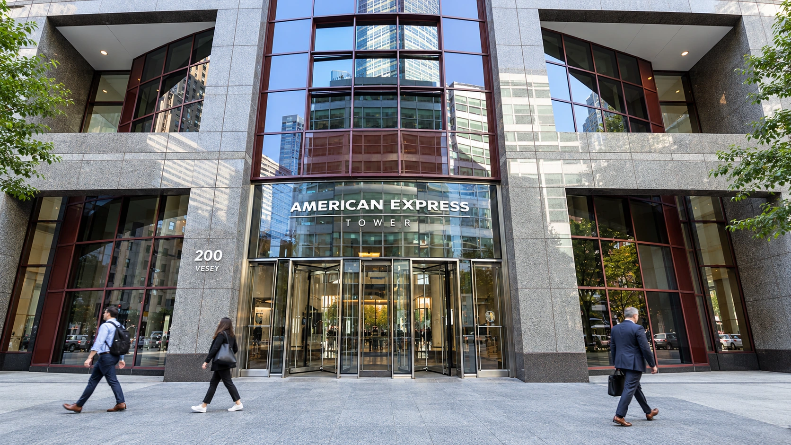

Amex lifts its profit floor and plans a 5% workforce cut
Record card spending lifted Amex revenue, but asset-sale gains and tax benefits complicate the earnings picture.

American Express raised the lower end of its annual adjusted profit forecast Friday as customers continued spending, while preparing a restructuring expected to eliminate about 5% of its global workforce. The combination puts two competing signals into the same report: a premium card business still growing and management seeking a leaner cost base.
The card issuer reported third-quarter revenue of $20.06 billion, up 9%, and $454 billion of billed business, an 8% increase. Adjusted earnings reached $4.68 a share, up 13%. Chief executive Stephen Squeri disclosed the planned workforce reduction during the earnings call, according to Reuters; the financial release described restructuring tied to efficiency initiatives.
The forecast increased at the bottom
Amex now expects adjusted 2026 earnings of $17.60 to $17.90 a share, compared with its previous $17.30 to $17.90 range. The upper limit did not change. That is a more measured improvement than a comparison with the new headline GAAP forecast of $18.30 to $18.60 might suggest. Management maintained its expectation for 10% annual revenue growth.
The distinction matters because accounting profit includes a gain from selling the company's equity stake in Global Business Travel Group. A disposal produces real value for shareholders, but it cannot be repeated indefinitely from the same asset. Comparing the adjusted ranges gives readers a clearer view of the change management expects from the continuing business.
Amex's presentation reconciles the figures explicitly. Third-quarter GAAP earnings were $5.42 a share, up 31%. Removing the sale gain and adding back the restructuring charge produces the $4.68 adjusted result. The annual outlook includes a net 73-cent contribution from those exceptional items. Neither number is interchangeable with the other, an important distinction when assessing an earnings report against market expectations.
Premium spending remains a strength
American Express earns money from spending across its network, card fees and lending. Those revenue streams respond differently to consumer behavior. More purchases can increase merchant-related revenue, while customers carrying larger balances can generate additional interest income. Higher spending alone does not establish that households are buying more goods or taking more trips; prices also influence dollar totals.
This is a useful qualification for a business serving relatively affluent customers. Its results offer evidence about its own customer base, rather than a complete reading of American household finances. As with retail earnings as a consumer indicator, the mix of customers matters as much as the headline growth rate. A resilient premium segment can coexist with pressure elsewhere.
Adjusted earnings still contain moving parts
The presentation shows adjusted pretax income rose just 2%, considerably less than the 13% increase in adjusted earnings per share. It also identifies a $195 million discrete tax benefit and a $215 million provision benefit from a credit-loss model update. Both remained inside adjusted earnings, alongside a $400 million pretax charge for legal matters.
Those disclosures show why adjusted does not mean free of unusual influences. Lower taxes, reserve assumptions and a smaller share count can lift earnings per share without an equivalent acceleration in operating income. Investors evaluating the quarter need to separate spending growth, credit costs and these accounting effects instead of treating the headline EPS increase as a single measure of underlying momentum.
The workforce plan adds another execution test. The company booked a $336 million pretax restructuring charge, or $253 million after tax. A charge records an expected cost; it does not demonstrate that future savings have already materialized. Maintaining customer service and growth while changing staffing will determine whether the restructuring improves the economics of the business.
The next results will therefore need to answer a more specific question than whether revenue is higher. Sustained billings growth, the behavior of credit losses and expenses after the restructuring will show how much of today's profit improvement can carry into the following year. The raised earnings floor signals confidence, but the unchanged ceiling and the detailed earnings reconciliation keep that confidence in perspective.
Sources and methodology
Sources checked October 23, 2026. Reported findings and company or regulatory statements are attributed in the text; discussion of financial implications is editorial analysis. The generated cover is illustrative.